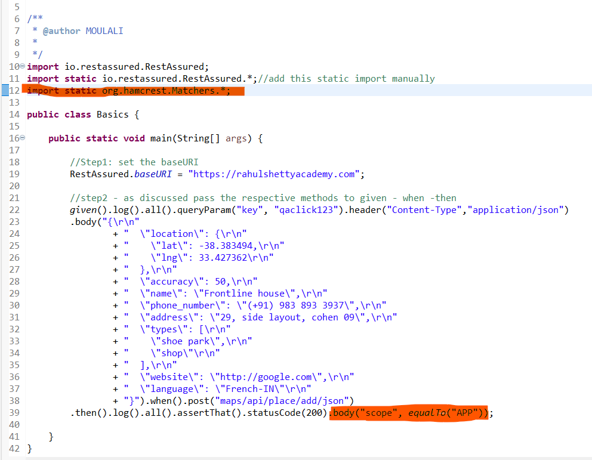
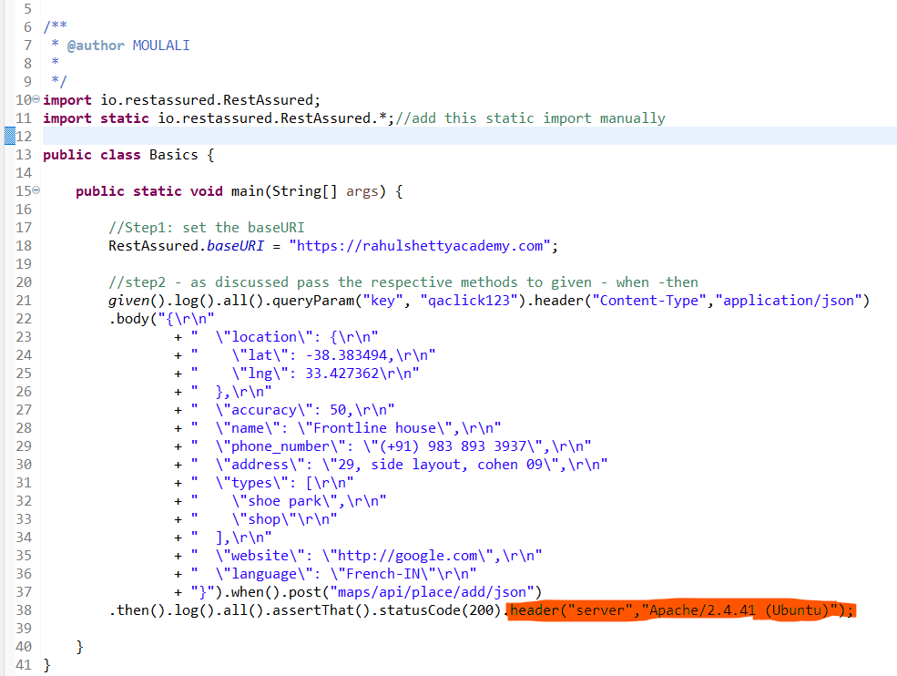
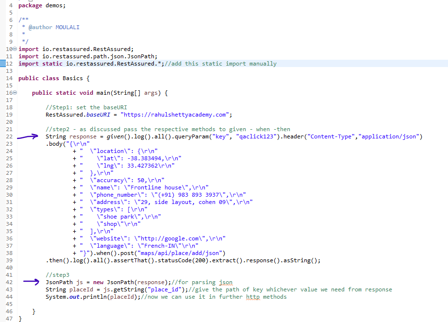

Lets see the various ways to validate the response
Using equalTo method present in hamcrest package
We can use the equalTo method to validate any key value pair inside the response body
Validating the server from which data is retrieved
To validate the server , after assertThat in then provide the key value pair of expected server
To save a required key value pair and use it in subsequent requets , as we have seen we used the place_id generated inside the POST method , in all subsequent GET , PUT , DELETE requests
We can achieve this using a class called JsonPath
Before this we convert the response to String and the pass that response as argument to JsonPath class
Thus by using various methods present inside the JsonPath class we can extract and save required key value pair from json
Now we can continue with the rest assured topics
NextPage HomePage